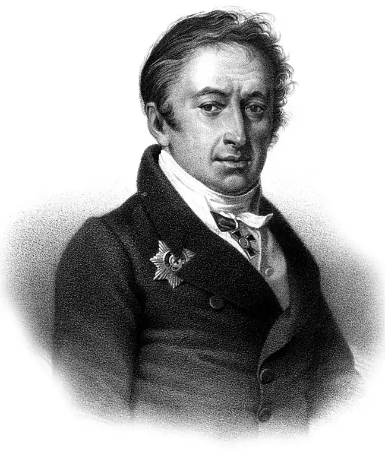
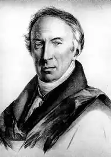

(12.12.1766 — 03.06.1826)
Коли наприкінці 1980-х "Історію держави Російського" випустили по підписці, ажіотаж був неймовірний. Створила його напівграмотна публіка, чомусь вважала Карамзіна за "раннього Пікуля". Забавно було дивитися на витягнуті обличчя тих, хто мав намір після обіду повалятися на дивані з томом "Історії…".
Багато і охоче плакали герої самої відомої повісті Миколи Михайловича Карамзіна. А укладачі радянської шкільної програми, включивши "Бідну Лізу" в курс 7-го класу, надовго приклеїли Карамзіним ярлик сльозливого сентименталиста. "Ліза ридала; Ераст плакав". Коли наприкінці 1980-х "Історію держави Російського" випустили по підписці, ажіотаж був неймовірний. Створила його напівграмотна публіка, чомусь вважала Карамзіна за "раннього Пікуля". Забавно було дивитися на витягнуті обличчя тих, хто мав намір после обіду повалятися на дивані з томом "Історії…". Доля відміряла Карамзіним 60 років. Він народився у розгульне, чванливою, барственной катерининської Росії, а покинув цей світ у перший рік миколаївського царювання, рік закінчення пушкінській посилання, останній рік останньої великої епохи російської історії. Натан Ейдельман не даремно назвав Карамзіна "останнім літописцем". Далі літописці не були потрібні – потрібні були стенографи і спічрайтери. Карамзін – перший російський автор, який почав писати з турботою про читача. Корявий, спотикається, запинающийся "трехштилевой" літературна мова XVIII століття під пером Карамзіна прояснив і розгладився, став схожий на лист білої папери поруч зі зморщеним жовтим пергаментом. Письменник поїхав в Європу. Не за царським наказом і посадовій посилу – по своїй волі. І не за тим, щоб, повернувшись, изругать вражі землі і оспівати хвалу рідним осинам і лопухам. "Листи російського мандрівника" свідчать: Карамзін їхав розуміти. Повернувся він першим російським європейцем. Донині це словосполучення – "російський європеєць" – трудноусвояемо. Коли юний Пушкін палко закохався в Катерину Андріївну Карамзіним, Микола Михайлович тільки поплескав поета по плечу і мовчки посміхнувся. Збентежив Пушкіна, а це мало кому вдавалося. І він же влітку 1820-го в розмові з імператором, який зібрався вислати Пушкіна з Петербурга за "обурливі вірші" ("обурливі" тоді означало "підбурливі"), сказав три слова: – Може, на південь? – До Інзову? Добре, – погодився імператор. А справа пахло Сибіром.